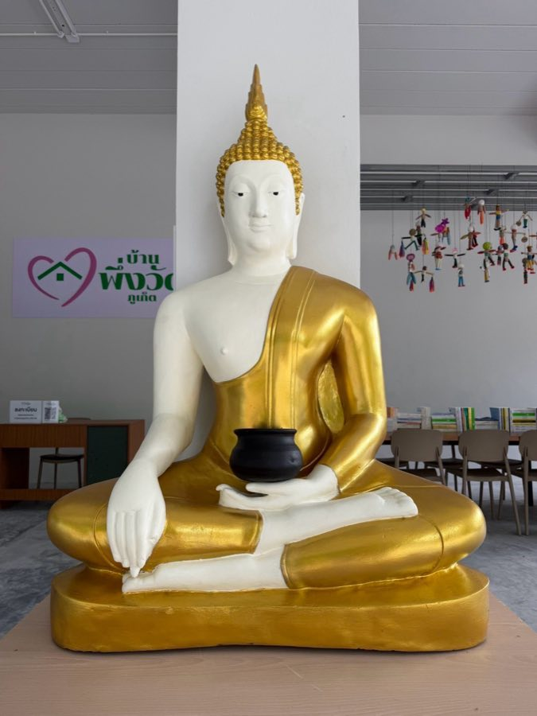

ทุกการบริจาคช่วยให้ผู้ป่วยและครอบครัวได้พักใกล้โรงพยาบาลโดยไม่มีค่าใช้จ่าย
สแกนด้วยแอปธนาคารใดก็ได้ ระบบจะพาไปหน้ายืนยันการโอนของธนาคารคุณโดยตรง
ค่าใช้จ่ายพื้นฐานที่ทำให้บ้านหลังนี้เปิดรับผู้เข้าพักได้อย่างต่อเนื่องทุกวัน
สนับสนุนอาหารระหว่างพักรักษาตัว เพื่อให้ผู้ป่วยและครอบครัวไม่ต้องกังวลเรื่องมื้อถัดไป
ของใช้ในชีวิตประจำวันระหว่างพักรักษาตัวที่บ้านพึ่งวัด
ของใช้จำเป็นสำหรับผู้เข้าพัก เช่น ผ้าอ้อมผู้ใหญ่ ข้าวสารอาหารแห้ง และของใช้ในชีวิตประจำวัน กรุณาติดต่อทีมงานก่อนนำมามอบ เพื่อให้ตรงกับความต้องการในช่วงนั้น
สนใจร่วมเป็นอาสาสมัครดูแลผู้เข้าพักหรือช่วยงานของบ้านพึ่งวัด ติดต่อผ่านช่องทางเดียวกันด้านล่างนี้
บ้านพึ่งวัดรับบริจาคผ่านบัญชีเดียวในนามวัดเขารังสามัคคีธรรมเท่านั้น — ธนาคารออมสิน 0-204-8133-2086 · บ้านพึ่งวัดไม่มีบัญชีอื่น หากพบการขอรับบริจาคในชื่ออื่น กรุณาสอบถามทีมงานที่ 065-950-6319 ก่อนโอน
โครงการบ้านพึ่งวัดอยู่ภายใต้การดูแลของวัดเขารังสามัคคีธรรม อำเภอเมืองภูเก็ต จังหวัดภูเก็ต
ระบบที่กรมสรรพากรเชื่อมกับวัด/มูลนิธิ/องค์กรที่มีสิทธิ์รับบริจาคโดยตรง เมื่อโอนเงินผ่านแอปธนาคารและกดยินยอมส่งข้อมูล ข้อมูลการบริจาคจะถูกส่งเข้าระบบให้อัตโนมัติ โดยไม่ต้องเก็บใบเสร็จหรือหลักฐานเอง
ลดหย่อนได้ตามจำนวนที่บริจาคจริง (1 เท่า) ไม่เกินเพดาน 10% ของเงินได้หลังหักค่าใช้จ่ายและค่าลดหย่อนตามหลักเกณฑ์ของกรมสรรพากร
ไม่จำเป็นสำหรับการใช้สิทธิลดหย่อนภาษี เพราะระบบ e-Donation ส่งข้อมูลให้กรมสรรพากรโดยอัตโนมัติแล้ว ส่วนใบอนุโมทนาบัตรเป็นที่ระลึกและหลักฐานจากทางวัด สามารถขอเพิ่มเติมได้
บริจาคได้ แต่เงื่อนไขสิทธิประโยชน์ทางภาษีของนิติบุคคลแตกต่างจากบุคคลธรรมดา แนะนำให้ปรึกษาสำนักงานบัญชีของบริษัทก่อนดำเนินการ